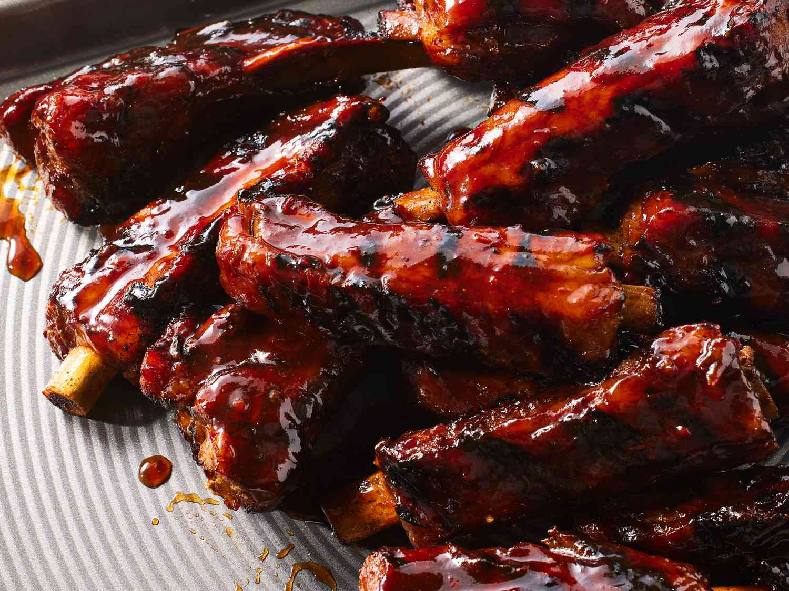

BBQ Ribs

Simple To Make BBQ Ribs
These ribs are simple to make and don't require the use of a grill!
Ingredients
- 2 1/2 pounds country-style pork ribs
- 2 tablespoons kosher salt
- 1 tablespoon garlic powder
- 1 teaspoon ground black pepper
- 1 cup barbeque sauce
Steps
- Gather all ingredients
- Place ribs in a large pot and cover with water. Stir in kosher salt, garlic powder, and pepper. Bring to a boil until ribs are tender.
- Preheat oven to 325 degrees F while ribs are boiling.
- Remove ribs from pot and place them in a baking dish. Pour BBQ sauce over ribs and cover the baking dish with aluminum foil.
- Bake until pork has reached 160 degrees F.
- Enjoy!